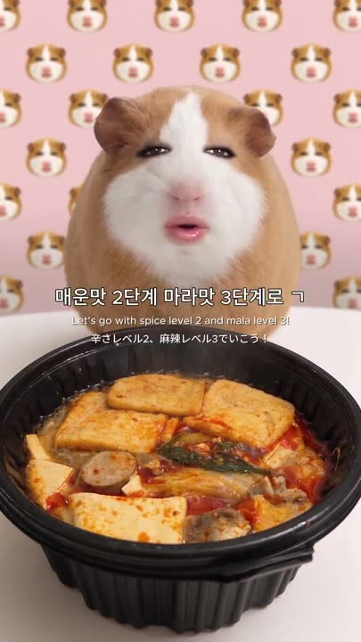
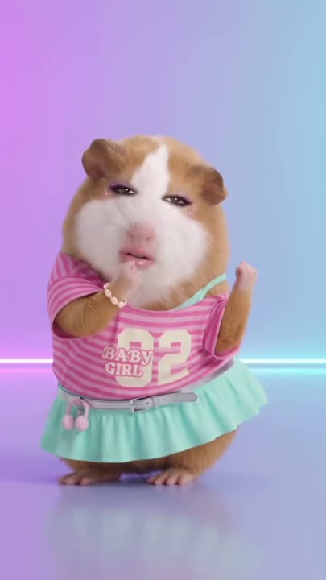
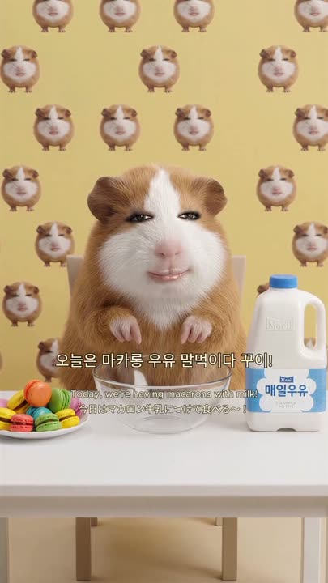
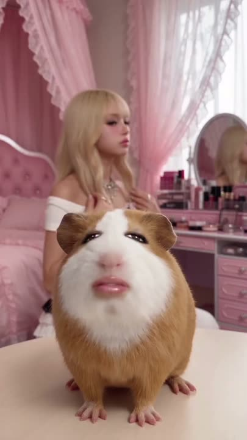
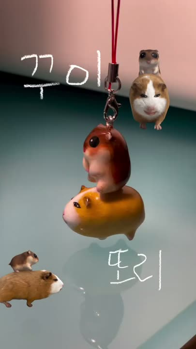

한 페이지 = 한 영상. 각 페이지에 샷별 캡처·구도·전환·사운드·AI 프롬프트·모델·FFmpeg/HyperFrames 편집법이 있습니다.

헬기 문에서 옥수수 한 양동이를 용암에 부으면 → 팝콘 기둥이 솟아 → 헬기 안까지 덮친다. 12초 동안 컷이 한 번도 없는 '말도 안 되는 원테이크'. 자막 0줄, 음악 0, 효과음과 '꾸이 꾸이'만.

세배 → 용돈 → 송편 내기 → 대형 송편 → 명절 상 → 갈비찜 → '매일 추석이었으면'. 명절 체크리스트를 캐릭터 가족극으로 44초에 압축. 아이들은 '꾸이'로만 말하고 뜻은 한·영·일 3줄 자막이 전달.

신나게 버거·감튀·콜라를 준비(점점 빨라지는 몽타주) → 거대한 보디빌더 손님이 작은 봉투를 보고 '간에 기별도 안 가겠네…' → 혼자 바닥에 앉아 울면서 먹는데 '그 와중에 맛있어…'. 22초 3막 코미디.

고정 카메라 앞에서 마라탕을 국자·젓가락으로 먹는 26초 먹방. 컷 0, 카메라는 마지막에만 천천히 다가감. 자막은 처음 3초 두 줄뿐.

걸그룹 콘셉트 의상(분홍 'BABY GIRL 02' 티 + 민트 치마)의 캐릭터가 17초 동안 춤추고, 흰 화면 '꾸이티걸' 로고로 끝. 자막 0줄.
KTX → 부산역 → 바다 보이는 횟집 → 할머니의 산낙지 → 밀면 → 해수욕장 튜브 → 밤바다 불꽃놀이 → 불꽃 '김꾸이 사랑해♥'. 여행 브이로그 문법 그대로.

몰래 간식(포장 떡) 먹방 → 주인 귀가 '또 먹었지?' → 체중계 1.8kg → '오늘부터 다이어트' → 쳇바퀴. 사람 주인(AI) + 캐릭터 2인극.

시리얼처럼 마카롱에 우유를 부어 먹는 '말먹'. 와이드 → 붓기 인서트 2컷 → 먹방 → 매크로 한입 → 입가 클로즈업.

꾸이가 '존잘 오빠 집에서 카레 먹었다'며 주인을 소개팅시켜 줌 → 설레며 방문 → 오빠는 2D 만화 캐릭터 → 알고 보니 종이 스티커(등신대). '미안하다 꾸이…'

손으로 만든 점토 키링 제작 과정. 손글씨 '꾸이/또리' 타이틀 → 턴테이블 + 실제 모델 PIP → 빚기·색칠 → '???' → 'happy ending' → 완성 키링.